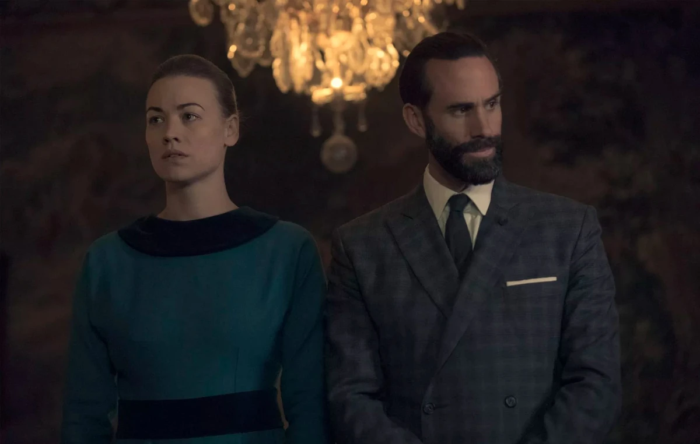
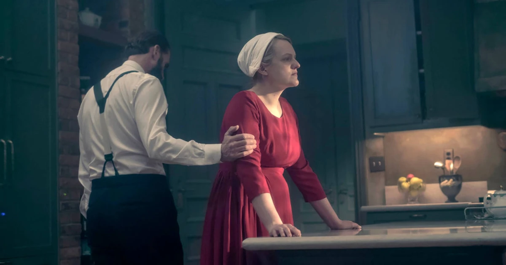

El Régimen De Gilead
Comandante Fred Waterford
Frederick "Fred" Waterford
Fundador, diplomático y rostro de la hipocresía de Gilead
Fred Waterford es uno de los personajes principales durante las primeras cuatro temporadas. Es interpretado por Joseph Fiennes.
Como miembro de la élite que ayudó a crear Gilead, representa la hipocresía y la agresividad ocultas detrás del discurso religioso del régimen.
Rol fundador y carrera política
Fred desempeñó un papel fundamental junto a Serena Joy en la creación de la República de Gilead y fue uno de los líderes fundacionales de los Hijos de Jacob.
Dentro del régimen se convirtió en un funcionario gubernamental de alto rango y en jefe de diplomacia.
Tras la muerte del comandante Andrew Pryce, Fred asumió el liderazgo del Consejo. Más adelante ocupó formalmente el lugar de Ray Cushing después de que este fuera arrestado por traición y apostasía, convirtiéndose en la cabeza principal de Gilead.

Poder, control y abuso
Liderazgo del Consejo
Su ascenso dentro de la estructura política lo situó en una posición comparable a la de un primer ministro, con autoridad sobre la diplomacia y las decisiones centrales del régimen.

Relación con June Osborne
June fue asignada a su hogar bajo el nombre de Defred y sometida a las violaciones ritualizadas de «la ceremonia».
Fred desarrolló un interés obsesivo por ella y comenzó a invitarla en secreto a jugar Scrabble, fingiendo una amabilidad que contrastaba con su carácter cruel y agresivo.
Momentos decisivos
Hitos del ascenso de Fred
-
01
Fundación de Gilead
Participa junto a Serena en el movimiento de los Hijos de Jacob y en la creación del régimen.
-
02
Jefatura del Consejo
Asume la máxima autoridad política después de las caídas de Andrew Pryce y Ray Cushing.
-
03
Abuso de June
Utiliza su posición para someter a June dentro y fuera de los límites establecidos por el propio sistema.